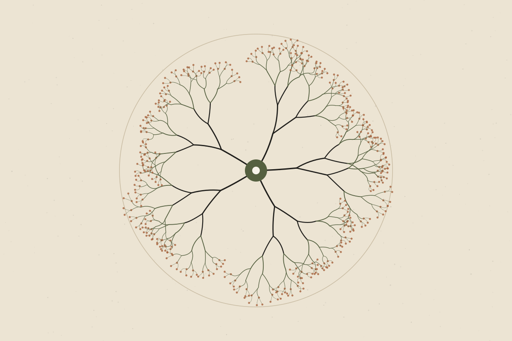

How Chronic Stress Affects the Brain and Body
The stress response is designed to help us. Problems tend to arise when it rarely switches off.

“Stress” is used to describe everything from a tight deadline to grief. In physiology it has a more specific meaning: the set of responses the body uses to cope with challenges. Those responses are useful. The concern is less about stress itself and more about what happens when the system stays active for long periods.
The stress response in brief
Well supportedWhen the brain perceives a challenge, two main systems respond. The sympathetic nervous system acts within seconds — raising heart rate and mobilising energy. The hypothalamic–pituitary–adrenal (HPA) axis acts more slowly, leading to the release of cortisol, which helps regulate energy, immune activity and alertness.
In the short term, this is adaptive. It sharpens attention, makes energy available and prepares the body to act. Once the challenge passes, the system is designed to settle again.
Acute versus chronic stress
Short, manageable stressors followed by recovery are a normal part of life — and may even help people build confidence and capacity. Chronic stress describes a different pattern: the challenge persists, or the body keeps responding as if it does, and recovery is limited.
Well supportedLong-term stress is associated with poorer sleep, difficulties with concentration, and changes in mood. These associations are consistent across many studies, although individual experience varies widely.
What happens in the brain?
Much of what we know about stress and brain structure comes from animal research, where prolonged stress has been linked to changes in regions involved in memory, emotion and decision-making.
Emerging / mixedIn humans, imaging studies have reported associations between long-term stress and differences in some of these regions. Because these are mostly observational studies, they cannot show that stress directly caused the differences, and the findings are not always consistent.
It is worth treating dramatic headlines — for example, that stress “shrinks your brain” — with caution. The brain is adaptable, and evidence on whether and how such changes reverse is still developing.
Effects beyond the brain
Well supportedChronic stress is associated with higher risk of several health problems, including cardiovascular disease, and it can influence sleep, appetite and behaviours such as activity levels.
Emerging / mixedThe exact pathways — for example, the relative roles of inflammation, hormones, sleep loss and behaviour — are still being worked out and probably differ between people.
What tends to help
There is no single fix, and stress that comes from real-world circumstances such as finances, caring responsibilities or unsafe environments may need practical, not just personal, solutions. That said, several approaches have reasonable support:
- Regular physical activity, which is associated with better mood and sleep.
- Protecting sleep, since poor sleep and stress tend to reinforce each other.
- Social connection and support from people you trust.
- Structured psychological approaches, such as those offered by qualified professionals.
UncertainMany popular tools — specific breathing techniques, supplements or apps — are promoted for stress. Some may help some people, but evidence is often limited or of mixed quality.
When to seek help
If stress is affecting your daily functioning, sleep or relationships, or you are experiencing persistent low mood or anxiety, speak to a doctor or mental health professional. If you are in crisis or feel unsafe, contact local emergency services.
The bottom line
The stress response is a protective system, not a flaw. What seems to matter most is the balance between challenge and recovery over time — and that balance is shaped by circumstances as well as personal habits.
References & further reading
References below are placeholders. Each must be replaced with a verified source before publication.
- [Reference placeholder] — add a verified source on: physiology of the stress response (HPA axis, sympathetic nervous system). Include authors, year, title, journal and DOI or link.
- [Reference placeholder] — add a verified source on: chronic stress and cardiovascular risk. Include authors, year, title, journal and DOI or link.
- [Reference placeholder] — add a verified source on: human imaging studies on stress and brain structure. Include authors, year, title, journal and DOI or link.
- [Reference placeholder] — add a verified source on: physical activity and mood. Include authors, year, title, journal and DOI or link.